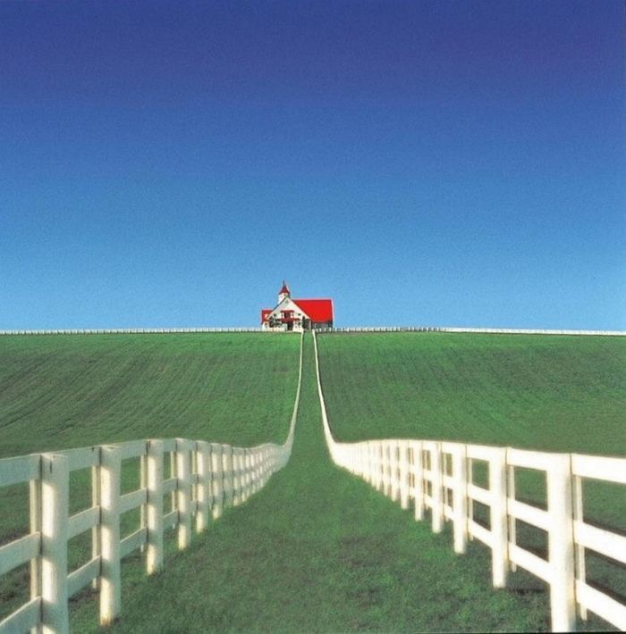
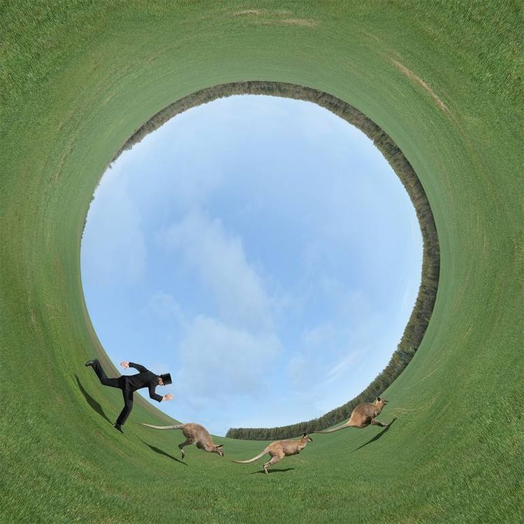
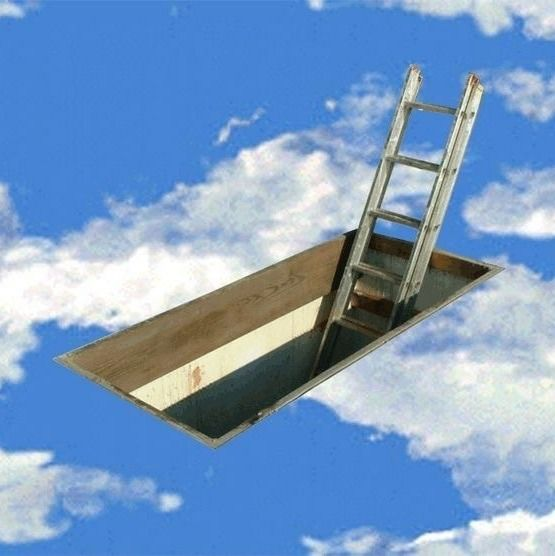

Esto es un cuento escrito
Se recomienda escuchar estas canciones. Son muy buenas
La casa existía ahí; eterna, solitaria, a la vista de todos y sin que nadie la pudiera ver. La habían construido los ratones con sus herramientas pequeñas y sus cascos para ratón (cuidaban mucho su seguridad). Una vez la terminaron de construir, hicieron un gran baile y celebraron. Fue la última vez que la casa vio vida en su interior. Ni siquiera las plantas quisieron crecer dentro de ella una vez fue abandonada. El té que sirvieron el día del baile fue espantoso así que nadie las culpó.
No pude acercarme a la casa. Cada paso que daba me alejaba tres de ella. Cuando me di cuenta que tenía que caminar hacia atrás fue muy tarde y caí de espaldas otra vez.
“¡Te digo que los canguros son excelentes cazadores! Fui de cacería con uno de ellos el otoño pasado y nunca había visto nada igual” Ya no estábamos en el valle y parecía que nunca me había caído. Nos alejabamos en un auto viejo; a lo lejos aún podía ver la casa, aún podía divisarse como a una estrella: una estrella en la noche de la que no se tiene certeza si sigue encendida. Mi acompañante vestía muy elegante. Llevaba un sombrero de copa y corbata de moño. Yo también. Me pareció raro, siempre he odiado las corbatas de moño.
“¿Has cazado con un canguro, Davis?” se refería a mí como Davis. Tal vez el que tuviera sombrero lo confundió y pensó que era inglés. Yo definitivamente no lo era. “No” le respondí mirando por la ventana. No quería irme todavía. Quería ver la casa por dentro. Cuando volvió a preguntarme sobre los canguros, abrí la puerta y salté del auto en movimiento.
Caí lejos del camino, directo en otro monte lleno de pasto. Caí de espaldas, mirando directo al cielo. Ya no podía ver la casa. Durante solo un segundo pensé que había perdido la oportunidad: jamás vería la casa. Entonces, pasaron mil años (tres segundos) y el cielo se abrió y bajó una paloma. De la compuerta que colgaba hacia mí salió una escalera como las que teníamos en mi casa de la infancia. Sin pensarlo me levanté y caí sobre el cielo. Entré por la puerta, impactado por el marco de esta. Estaba muy bien hecho.
